Making a mortar and pestle
Whether you want to make a small mortar and pestle or a large African style version, burning the mortar cup out using hot coals is an effective method. This technique can also be used for making many kinds of other utensils too. If you don't have a spoon knife or just want to get more primitive then this is the answer.
Since making this mortar and pestle a few years ago I have used it countless times as part of processing many types of foraged seed and nuts into food, particularly Pendulous Sedge seed and Acorns. It has also come in handy for grinding tannin rich materials such a Oak galls, Walnut husks and many types of tree bark which I use for tanning skins.
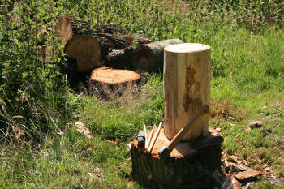Start out with a log of hardwood, I am using Oak, it is important that the wood is completely seasoned otherwise it would likely split severely as it dries. (If you wish to prepare food in your finished mortar be sure to use a non-toxic wood.) Removing the bark can be a good idea as this can harbour wood eating beetle larvae. Any undulations in the log's shape can also be rounded off using a sharp hatchet, as I did. Make sure the top and bottom are cut nice and level too.
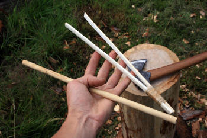Before we get burning you'll need some kind of straw through which to blow air at the hot coals. Encouraging the burn rate in this way is essential. A straw can easily be fashioned from a stem of elder by pushing the pith out, a stiff piece of fencing wire can be used to do this, alternatively it could be rodded/ drilled out with a thin shoot of wood such as Willow.
A large pair of tweezers will make life easy when transferring coals from the fire to your log. A small wedge bound between the ends of two flexible flat pieces wood does the job for this.
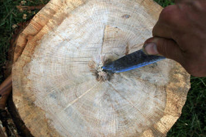As a starting point and also to help the hot coals get a purchase on the wood, use a knife to make a small depression in the centre.
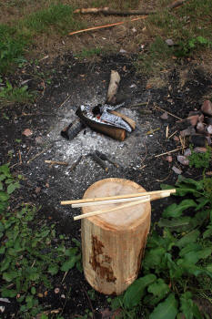Start your fire and you are all ready to go.
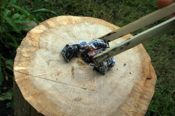 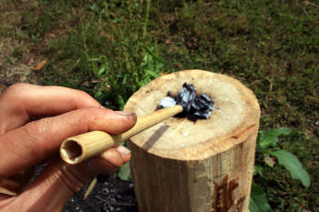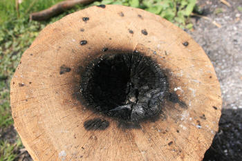Keep blowing air until you make your first good depression. You may notice that progress will slow down due to an eventual build up of thick charred wood. At this point remove the coals and scrape it out with a stick. Now add fresh coals and continue to burn the cup bigger.
Â
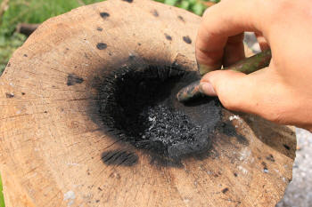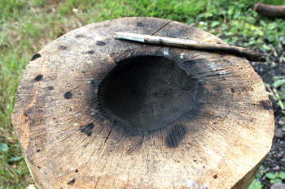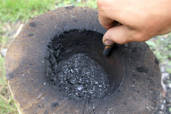Constant burning and scraping is the name of the game. Keep going until the mortar cup is as big as you'd like. This can take quite some time...
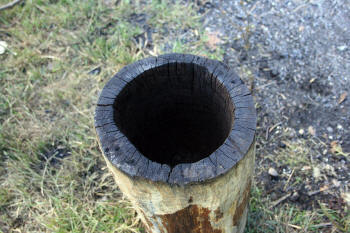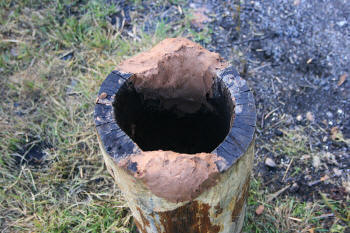Some areas will probably burn faster than others which creates inconsistencies in the cup shape. You can protect the thin areas from further burning by shielding them with clay.
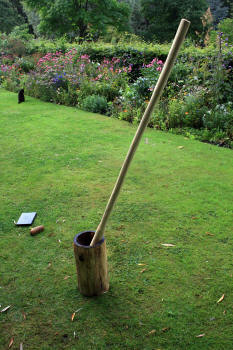The large pestle is easy enough to make from a hardwood sapling. I thinned down the middle section, leaving a thick portion at the top and bottom (at the top too because I believe this makes the pestle feel more balanced when in use). Finally, round off the end to be used for grinding.
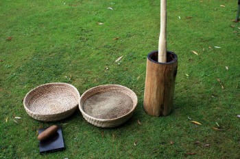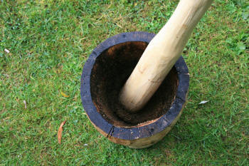